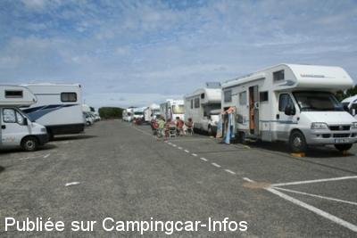
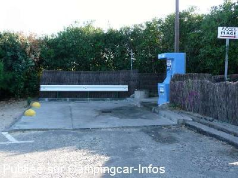
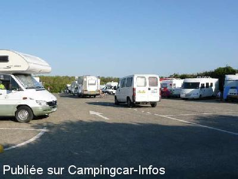

ASN = Aire de services avec stationnement nuit possible de :
ONDRES
(N° 685)
Accès/adresse :
Avenue de la Plage
Parking P3
40440 ONDRES
Parking P3
40440 ONDRES
Latitude : (Nord) 43.57655° Décimaux ou 43° 34′ 35′′
Longitude : (Ouest) -1.48709° Décimaux ou -1° 29′ 13′′
Tarif : 2016
Stationnement, services du 09/04 au 01/11 : 8 à 10 €
Type de borne : FLOT BLEU
Services :


Poubelles
Possibilité repas
plage et commerces à proximité
Autres informations :
Ouvert toute l'année
Services de Pâques à la Toussaint
41 emplacements
Stationnement limité 48 h
Tel : +33(0)559 451 919
http://www.seignanx-tourisme.com/fr-aire_de_campingcars-fiche-aire_de_camping_cars_d_ondres_1_ACCAMAQU04000013_fr.html

Le 23/08/2010 par le tico

Le 29/07/2009 par Fanfan

Le 29/07/2009 par Fanfan
de
philippe
le 26/04/2016 :
je suis passer pour les vacances d avril jolie cadre mais il y a que la moitié du parking ou il y a de l éléctricité pour 8€ cela fait chére pour les autres!
je suis passer pour les vacances d avril jolie cadre mais il y a que la moitié du parking ou il y a de l éléctricité pour 8€ cela fait chére pour les autres!
de
le 18/04/2016 :
J'y suis passé fin mars (après pâques) et la borne n'est pas remontée. Les installations de vidanges sont condamnées par un énorme rocher et tous les robinets sont démontés. Il ne semble pas y avoir de travaux récents ni en cours sur les parkings de la plage.
J'y suis passé fin mars (après pâques) et la borne n'est pas remontée. Les installations de vidanges sont condamnées par un énorme rocher et tous les robinets sont démontés. Il ne semble pas y avoir de travaux récents ni en cours sur les parkings de la plage.
de
brnard 60
le 22/03/2016 :
Sommes passés mi mars, aire ouverte et gratuite mais sans eau sans vidange possible et sans électricité. La réouverture a lieu le vendredi avant Pacques. Et la elle sera payante. Attention le we de Pacques il y a une brocante a Ondres sur les sports du surf et très difficile de trouver une place
Sommes passés mi mars, aire ouverte et gratuite mais sans eau sans vidange possible et sans électricité. La réouverture a lieu le vendredi avant Pacques. Et la elle sera payante. Attention le we de Pacques il y a une brocante a Ondres sur les sports du surf et très difficile de trouver une place
de
Dutheil jean yves
le 24/12/2015 :
je suis passé début décembre 2015 électricité coupée et eau .
je suis passé début décembre 2015 électricité coupée et eau .
de
Fabrice
le 13/11/2015 :
§ Aire sympa, gratuite hors saison, en bord de plage, WC public très propre à proximité, restaurants et pizza à emporter à côté, supermarché à 20 mn à pied, centre ville à 40 mn.
L'aire de camping cars de Ondres est située à proximité des restaurants, dans un environnement typique des Landes: grande plage, forêt de pins et dune (protégée). En été, vous pourrez profiter de la navette (gratuite) qui vous conduira au centre du village (commerces, marché le dimanche). C'est également un point de départ de piste cyclable (Ondres, Tarnos, Capbreton…). En terme d'équipements, vous trouverez une borne "flot bleu" (eau, électricité) ainsi que la possibilité de vider vos eaux usées et toilettes chimiques. Ces équipements sont disponibles des vacances de Printemps jusqu'à l'automne (Toussaint). Sanitaires publics (wc) à proximité. Maximum 48 heures. Emplacement payant: 10€ en juillet et août + 8€ hors saison estivale. Le reste de l'année, l'aire de camping cars est gratuite, mais sans services.
§ Aire sympa, gratuite hors saison, en bord de plage, WC public très propre à proximité, restaurants et pizza à emporter à côté, supermarché à 20 mn à pied, centre ville à 40 mn.
L'aire de camping cars de Ondres est située à proximité des restaurants, dans un environnement typique des Landes: grande plage, forêt de pins et dune (protégée). En été, vous pourrez profiter de la navette (gratuite) qui vous conduira au centre du village (commerces, marché le dimanche). C'est également un point de départ de piste cyclable (Ondres, Tarnos, Capbreton…). En terme d'équipements, vous trouverez une borne "flot bleu" (eau, électricité) ainsi que la possibilité de vider vos eaux usées et toilettes chimiques. Ces équipements sont disponibles des vacances de Printemps jusqu'à l'automne (Toussaint). Sanitaires publics (wc) à proximité. Maximum 48 heures. Emplacement payant: 10€ en juillet et août + 8€ hors saison estivale. Le reste de l'année, l'aire de camping cars est gratuite, mais sans services.
de
vincent
le 30/10/2015 :
oct 2015. en cette saison l'aire est gratuite (barrière démontés par la mairie). Contrairement à beaucoup de commentaire, cette aire n'a pas été supprimée. vidange électricité et eau fonctionnelle. vide WC vieux et sale mais fonctionnel. au pied de la plage et de 2 restaurants ouvert en octobre. accés à la plage aménagé. Etape incontournable.
oct 2015. en cette saison l'aire est gratuite (barrière démontés par la mairie). Contrairement à beaucoup de commentaire, cette aire n'a pas été supprimée. vidange électricité et eau fonctionnelle. vide WC vieux et sale mais fonctionnel. au pied de la plage et de 2 restaurants ouvert en octobre. accés à la plage aménagé. Etape incontournable.
de
PR
le 06/08/2015 :
de passage en juillet 2015. Aire très calme et sécurisée (gendrmerie et police Municip.) située au ras de la plage sans commerce (Vivalp à 2-3 kms). pratique pour baignade.
de passage en juillet 2015. Aire très calme et sécurisée (gendrmerie et police Municip.) située au ras de la plage sans commerce (Vivalp à 2-3 kms). pratique pour baignade.
de
Philippe
le 06/09/2014 :
L'aire ne sera pas supprimée:infos de la police municipal qui collecte le paiement du stationnement.en 2015, les travaux concernent les parkings autos, l'aire sera toujours sur le P3.Ensuite, quand les travaux seront terminés, elle sera déplacée sur l'arrière du P3. Soit un retrait de 200m par rapport à la borne de vidange actuelle. Elle ne figure pas sur l'affichage des projets qui montrent seulement les parkings autos.
L'aire ne sera pas supprimée:infos de la police municipal qui collecte le paiement du stationnement.en 2015, les travaux concernent les parkings autos, l'aire sera toujours sur le P3.Ensuite, quand les travaux seront terminés, elle sera déplacée sur l'arrière du P3. Soit un retrait de 200m par rapport à la borne de vidange actuelle. Elle ne figure pas sur l'affichage des projets qui montrent seulement les parkings autos.
de
Didier 42
le 26/08/2014 :
De passage en juillet sur cette aire très proche de l'océan, j'ai découvert qu'elle allait être supprimée lors du réaménagement des parkings d'Ondres-Plage(2015 ?). Cette information est affichée sur le parking côté gauche en allant vers l'accès à la plage.
L'agent municipal qui collecte le paiement du stationnement m'a confirmé l'information...
C'est bien dommage cela fera une aire de moins sur le littoral.
De passage en juillet sur cette aire très proche de l'océan, j'ai découvert qu'elle allait être supprimée lors du réaménagement des parkings d'Ondres-Plage(2015 ?). Cette information est affichée sur le parking côté gauche en allant vers l'accès à la plage.
L'agent municipal qui collecte le paiement du stationnement m'a confirmé l'information...
C'est bien dommage cela fera une aire de moins sur le littoral.
de
JY GUILLERME
le 15/04/2014 :
Services ouverts le vendredi 11 avril et stationnement payant depuis le samedi 12 : 7 € en ce moment
Services ouverts le vendredi 11 avril et stationnement payant depuis le samedi 12 : 7 € en ce moment
de
GG64
le 31/03/2014 :
Bonjour
De passage sur l'aire ce vendredi 28 mars, j'ai vu sur un panneau le futur plan d'aménagement de la plage d'Ondres. D'après ce panneau, l'aire de camping car a disparu...Il est vrai qu'une bonne partie des dunes a aussi disparu et que ce sera bientôt au tour du resto "La Plancha" de disparaître...
Bonjour
De passage sur l'aire ce vendredi 28 mars, j'ai vu sur un panneau le futur plan d'aménagement de la plage d'Ondres. D'après ce panneau, l'aire de camping car a disparu...Il est vrai qu'une bonne partie des dunes a aussi disparu et que ce sera bientôt au tour du resto "La Plancha" de disparaître...
de
Michel-85
le 23/03/2014 :
De passage en mars, je suis très déçu. Aire bien placée et de bonne qualité OK.
Il est précisé sur la fiche services ouvert de Pâques à octobre La gestion des aires
De passage en mars, je suis très déçu. Aire bien placée et de bonne qualité OK.
Il est précisé sur la fiche services ouvert de Pâques à octobre La gestion des aires
de
Nenettemamita
le 08/08/2013 :
Juillet 2013, superbe aire avec tous services pour 9 euros, EDF compris, la police municipale passe pour le règlement et fait plusieurs rondes dans la journée pour la sécurité, des places spacieuses, des services faciles, la plage surveillée au bout du petit chemin avec douches sur la plage. Petits restaus, pains etc... sur place, navette gratuite pour aller au bourg, pistes cyclables dans les pins.
Juillet 2013, superbe aire avec tous services pour 9 euros, EDF compris, la police municipale passe pour le règlement et fait plusieurs rondes dans la journée pour la sécurité, des places spacieuses, des services faciles, la plage surveillée au bout du petit chemin avec douches sur la plage. Petits restaus, pains etc... sur place, navette gratuite pour aller au bourg, pistes cyclables dans les pins.
de
Melanie
le 08/08/2013 :
Aire idéale. Les places sont larges et permettent même de sortir une table et des chaises, un petit chemin de 50 mètres et on atteint la plage ! Il y a des douches pour se rincer et des toilettes à disposition. Il y a également une navette plage gratuite, sûrement possible pour aller au village, mais pas testé. Paiement à la police municipale qui passe le matin, le stationnement limité à 48h a sans aucun doute permis à ce que nous trouvions une place alors que nous arrivions à 21h30 !! Merci Ondres !!
Aire idéale. Les places sont larges et permettent même de sortir une table et des chaises, un petit chemin de 50 mètres et on atteint la plage ! Il y a des douches pour se rincer et des toilettes à disposition. Il y a également une navette plage gratuite, sûrement possible pour aller au village, mais pas testé. Paiement à la police municipale qui passe le matin, le stationnement limité à 48h a sans aucun doute permis à ce que nous trouvions une place alors que nous arrivions à 21h30 !! Merci Ondres !!